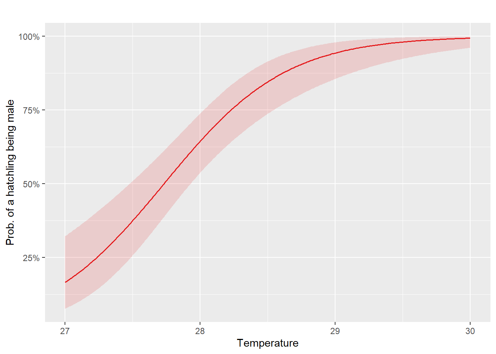

Week 8: Generalised Linear Models part 2
1 Introduction
Last week we introduced Generalised Linear Models (GLMs). Particularly, we looked at logistic regression to model outcomes of interest that take one of two categorical values (e.g.yes/no, success/failure, alive/dead). This week we will continue reviewing logistic regression to model grouped binary outcomes (e.g. number of successes out of a fixed number of trials) and then we we will generalise this to situations where the response variable is categorical with more than two categories. First lets look at the framework for modelling categorical data with only two categories, i.e.
binary, taking the value 1 (say success, with probability \(p\)) or 0 (failure, with probability \(1-p\)) or
binomial, where \(y_i\) is the number of events (successes) in a given number of trials \(n_i\), with the probability of success being \(p_i\) and the probability of failure being \(1-p_i\).
In both cases the distribution of \(y_i\) is assumed to be binomial, but in the first case it is \(\mathrm{Bin}(1,p_i)\) and in the second case it is \(\mathrm{Bin}(n_i,p_i)\). The first case was covered last week, so now lets focus on the second case.
Before we proceed, we will load all the packages needed for this week:
2 Logistic regression with grouped binary data
Suppose that our binary outcome \(y_i\) is grouped across \(n_i\) number of trials, e.g. number of times a head landed when a coin was tossed on multiple occasions or the proportion of beetles that were killed after being exposed to an insecticide.
In such cases \(y_i \sim \mathrm{Bin}(n_i,p_i)\), often referred to as proportional data, since our dependent variables are expressed as percentages or fractions of a whole. Lets look at a an example.
It is known that the incubation temperature can affect the sex determination of turtles. An experiment was conducted where turtle eggs were incubated at various temperatures and the number of male and female hatchlings was recorded. The goal of the experiment was to examine the link between incubation temperature and the chance of hatchling being a male.

The turtle data set within the faraway library contains the number of hatched male and female turtles across different temperatures, with 3 independent replicates for each temperature.
Rows: 15
Columns: 3
$ temp <dbl> 27.2, 27.2, 27.2, 27.7, 27.7, 27.7, 28.3, 28.3, 28.3, 28.4, 28.…
$ male <int> 1, 0, 1, 7, 4, 6, 13, 6, 7, 7, 5, 7, 10, 8, 9
$ female <int> 9, 8, 8, 3, 2, 2, 0, 3, 1, 3, 3, 2, 1, 0, 0Lets investigate whether the probability of a male being hatched increases or decrease with the temperature. First, we need to compute the proportion of males that hatched on each replicate per temperature. To do this, we obtain the ratio between the total number of male hatchlings and total number hatchlings (males+females):
turtles = turtles %>%
mutate(totals = male+female,
male_props = male/totals)We can see on the next plot, that the proportion of males hatchlings seems to increase as the incubation temperature rises.
Code
ggplot(turtles,aes(y= male_props,x=temp))+
geom_point()+
labs(y="proportion of male hatchlings",x = "temperature")
To corroborate this result, we can fit a logistic regression to the data.
\[\begin{align} y_i &\sim \mathrm{Binomial}(n_i,p_i)\\ \mathrm{logit}(p_i) &= \beta_0 +\beta_1 \times \mathrm{temperature}. \end{align}\]Here, \(y_i\) denotes the number of hatched males on the \(i\)th experiment replicate, \(n_i\) is the fixed total number of hatched eggs per replicate, \(p_i\) is the probability of a male turtle being hatched, and \(\beta_0\) and \(\beta_1\) are our unknown parameters to be estimated.
Proportions can be modelled by providing an \(N \times 2\) matrix of the number of positive events (num. of males hatchlings) and the number of negative events (number of female hatchlings):
or by providing the proportion of males hatchlings and weights totals, i.e the number of trials (number of eggs in each replicate), in the glm function:
model_turtles <- glm(male_props ~ temp,
data = turtles,
weights = totals,
family = binomial)These two formulations are valid and will yield to the same following result:
| term | estimate | std.error | statistic | p.value | conf.low | conf.high |
|---|---|---|---|---|---|---|
| (Intercept) | -61.32 | 12.02 | -5.10 | 0 | -86.83 | -39.73 |
| temp | 2.21 | 0.43 | 5.13 | 0 | 1.44 | 3.13 |
The interpretation goes as follows:
For every unit increase (celsius degrees presumably) in Temperature, the log-odds of a male being hatched increase by 2.21 i.e. the chances of hatching a male increases as the incubation temperature increases.
Given \(p_{val} < 0.05\), we can reject the null hypothesis \(\beta_1 = 0\) that one unit increase in temperature does not affect chances of a male being hatched.
For every unit increase in Temperature, the odds of hatching a male are \(\mathrm{exp}(\beta_1) = 9.13\) times the odds of those with one temperature unit less.
We can now plot the predicted probabilities of a hatchling being male. However, notice that the number of unique temperature values in the turtles data set is not very large:
Thus, we can create a coarser grid of temperature values to make our predictions and then use the plot_model() function as follows:
Code
temp_pred = seq(27,30,by=0.01)
plot_model(model_turtles,
type = "eff",
title = "",
terms="temp[temp_pred]",
axis.title = c("Temperature", "Prob. of a hatchling being male"))
Besides our usual model checks and model evaluation metrics, when dealing with proportional data sometimes we find that the observed variability in the data is greater than the one expected by the model, i.e. \(Var(Y) = n ~p~ (1-p)\).
This excess of variance is called overdispersion and its an indicator that our model is missing some important variability in the data (e.g. unaccounted factors affecting the probability of an event, non-independent trials, clustering within the data, among others).
To check for overdispersion we can use the built-in check_overdispersion() function from the performance package (to learn more about overdispersion see Gelman and Hill (2006)):
check_overdispersion(model_turtles)# Overdispersion test
dispersion ratio = 1.250
p-value = 0.176No overdispersion detected.In this example its seems we don’t have to worry about it. But what about the binary case (i.e. ungrouped data)? well overdispersion is usually not a concern here because the variance cannot exceed the range for a binary response where each observation represents a single outcome (0 or 1) and the variance of the model is constrained since \(Var(Y) = p(1-p)\).
2.1 Modelling grouped binary data with a categorical covariate
In the last section we reviewed the case when the explanatory variable was continuous., lets look now at the case when the explanatory variable is categorical.
To illustrate how the previous model works with categorical predictors we can discretized the temperature values into arbitrary categories as follows:
\[ \mathrm{temperature~ category} =\begin{cases} \mathrm{temperature} > 29^\circ C & \text{high} \\ \mathrm{temperature} > 28^\circ C& \text{medium} \\ \text{else} & \text{low}\end{cases} \]
In R we can use the case_when() function to accomplish this:
Now, recall that as usual, R will set the baseline category for our explanatory variable in alphabetical order, i.e. the high temperature level will be treated as reference for the dicretized variable. However, we already know that the chances of a male being hatched increases with higher incubation temperatures.
Thus, it makes sense to assess how the chances of a male being hatched are affected by comparing higher temperature categories against lower ones. This implies that we will set low to be our reference category. Luckily, we have seen in previous tasks how to do this using the relevel() function:
We can now fit a logistic regression using the low temperature level as the reference category for our dicretized temperature covariate. The model is then given by:
\(\alpha\) represent the log-odds of a male turtle being hatched in
lowincubation temperature.\(\beta_1\) are the change int the log-odds of a male turtle being hatched given it was incubated in a
hightemperature condition compared to alowone.\(\mathbb{I}_{\mathrm{temperature}}(\mathrm{high})\) is an indicator variable that takes the value of 1 if the \(i\)th experiment replicate was conducted on a
hightemperature.\(\beta_2\) are the change int the log-odds of a male turtle being hatched given it was incubated in a
mediumcondition compared to alowone.\(\mathbb{I}_{\mathrm{temperature}}(\mathrm{medium})\) is an indicator variable that takes the value of 1 if the \(i\)th experiment replicate was conducted on a
mediumtemperature.
In R, the model can be fitted as follows:
Lets print the model estimates odds scale and 95% confidence intervals (remember we can achieve this by setting conf.int=TRUE and exponentiate=TRUE within the tidy function):
| term | estimate | std.error | statistic | p.value | conf.low | conf.high |
|---|---|---|---|---|---|---|
| (Intercept) | 0.59 | 0.29 | -1.80 | 0.07 | 0.33 | 1.04 |
| temp_fcthigh | 45.47 | 1.06 | 3.61 | 0.00 | 8.59 | 843.97 |
| temp_fctmedium | 6.32 | 0.44 | 4.23 | 0.00 | 2.76 | 15.31 |
We can see that the odds of a male being hacthed if it was incubated on a low temperature condition are 0.59 the odds of a female being hatched if it was incubated on the same condition.
Alternatively, we could interpret this as the odds of female being hatched in a low temperature incubation settings being \(\mathrm{exp}(\alpha)^{-1} =\) 1.68 higher than the odds of a male being hatched under the same setting. However, there is not enough evidence to support that the change in the odds is statistically significant since the confidence interval ( 0.33 , 1.04) contains 1 (remember we are in the odds scale).
On the other hand, the odds of a male being hatched are 45.47! significantly higher in a high temperature setting compared to a low temperature. Likewise, the odds of a male being hatched are 6.32 higher in a medium temperature condition compared to a low one.
What if we want to compare the odds of a male being hatched if the egg was incubate on a high temperture conditon against a medium one?
In that case, we we will be looking at the following odds ratio:
\[\begin{align} \dfrac{\mathrm{Odds}(\mathrm{male}=1|\mathrm{temperature}=high)}{\mathrm{Odds}(\mathrm{male}=1|\mathrm{temperature}=medium)} &= \dfrac{\mathrm{exp}(\alpha+\beta_1)}{\mathrm{exp}(\alpha+\beta_2)} \\ &= \mathrm{exp}(\alpha+\beta_1 - \alpha - \beta_2) \\ &= \mathrm{exp}(\beta_1 - \beta_2) = \frac{\mathrm{exp}(\beta_1)}{ \mathrm{exp}(\beta_2)} \end{align}\]Where \(\beta_1\) and \(\beta_2\) are the coefficients in the log-odd scale. However since we already have \(\mathrm{exp}(\beta_1)=\) 45.47 and \(\mathrm{exp}(\beta_2)=\) 6.32, then the odds of male being hatched from an egg that was incubated on a high temperature condition are \(\frac{45.47}{6.32}=\) 7.2 greater than the one that was incubate on a medium temperature condition.
Finally, we can calculate the probabilities of a male being hatched in each temperature condition as follows:
-
\(P(\mathrm{male}=1|\mathrm{temperature}=low) = \dfrac{\mathrm{\mathrm{exp}(\alpha})}{1 + \mathrm{exp}(\alpha)}.\) In R this is:
-
\(P(\mathrm{male}=1|\mathrm{temperature}=medium) = \dfrac{\mathrm{\mathrm{exp}(\alpha + \beta_1})}{1 + \mathrm{exp}(\alpha + \beta_1)}.\) In R this is equivalent to:
-
\(P(\mathrm{male}=1|\mathrm{temperature}=high) = \dfrac{\mathrm{\mathrm{exp}(\alpha + \beta_2})}{1 + \mathrm{exp}(\alpha + \beta_2)}\). In R this is computed as:
We can visualize this probabilities using the plot_model() function as follows:
Code
plot_model(type = "pred",
model_turtles_2,
terms = "temp_fct",
axis.title = c("Temperature Category",
"Prob. of a hatchling being male"),
title = " ")
3 Models for multiple categorical responses
Now that we have covered GLMs for categorical responses with two possible outcomes, we will generalise this to situations where the response variable is categorical with more than two categories. More specifically, we will look at logistic regression models applied to nominal (unordered) responses with more than two categories.
The basis for modelling categorical data with more than two categories is the multinomial distribution.
Consider a random variable \(Y\) with \(J\) categories. Let \(p_1,p_2,\dots, p_J\) be the respective probabilities associated with each of the \(J\) categories, with \(\sum_j^J p_j = 1\). Suppose there are \(n\) independent observations which result in \(y_1\) outcomes in category 1, \(y_2\) outcomes in category 2, and so on. Let \(\mathbf{y}=(y_1,y_2,\dots,y_J)^\intercal\) with \(\sum_{j=1}^J y_j = n\). We say that \(\mathbf{y}\) follows a multinomial distribution with probability mass function (p.m.f.)
\[ f(\mathbf{y} | n)=\frac{n!}{y_1! y_2! \dots y_J!}p_1^{y_1}p_2^{y_2}\dots p_J^{y_J}. \tag{1}\]
If \(J=2\) then \(p_2=1-p_1\) and \(y_2=n-y_1\) so the expression above reduces to the p.m.f. of the binomial distribution:
\[ f(\mathbf{y} | n)=\frac{n!}{y_1! (n-y_1)!} p_1^{y_1}p_2^{n-y_1} \]
For the multinomial distribution, we have the following expressions for the mean, variance and covariance:
\[\begin{align*} \textrm{E}(Y_j)&=np_j\\ \textrm{Var}(Y_j)&=np_j(1-p_j)\\ \textrm{Cov}(Y_j,Y_k)&= -n p_jp_k \end{align*}\]Notice also the negative covariance between \(Y_j\) and \(Y_k\) due to the sum constraint \(\sum_{j=1}^J y_j = n\).
In general, the multinomial model does not satisfy the exponential family distribution requirement for the response in a GLM, but we can still fit GLMs to multinomial responses thanks to its relationship with the Poisson distribution, which is a member of the exponential family.
3.1 Nominal logistic regression
Nominal logistic regression, also known as multinomial logistic regression is used when there is no natural order among the response categories, for example:
- Eye colour: Blue, Green, Brown, Hazel
- House types: Bungalow, Duplex, Terrace
- Type of pet: Dog, Cat, Rodent, Fish, Bird
- Genotype: AA, Aa, aa
The goal is to estimate the probabilities for each class \(j\) (where \(j \in \{1,2,\ldots,J\}\)) based on the independent variables \(\mathbf{x}\). The probability of the \(j\)th class is then given by:
\[ P(Y=j|\mathbf{x})= \dfrac{\mathrm{exp}(\mathbf{x}^\intercal \boldsymbol{\beta}_j)}{\sum_{k=1}^J\mathrm{exp}(\mathbf{x}^\intercal \boldsymbol{\beta}_k)} \]
Typically, one category is arbitrarily chosen as the reference category, and all other categories are compared with it. Suppose category \(J\) is chosen as the reference category. The log-odds for the other categories relative to the reference are:
\[ \mathrm{log}\left(\dfrac{P(Y=j|\mathbf{x})}{P(Y=J|\mathbf{x})}\right) = \mathrm{log}\left(\dfrac{p_j}{p_J}\right) =\mathbf{x}^\intercal\boldsymbol{\beta}_j, ~~\text{for } j=1,\dots,J-1. \tag{2}\]
3.2 Parameter estimation and fitted values
The \(J-1\) log-odds in Equation 2 are solved simultaneously to estimate the parameters \(\boldsymbol{\beta}_j\).
Given parameter estimates \(\hat{\boldsymbol{\beta}}_j\), the linear predictors \(\mathbf{x}^\intercal\hat{\boldsymbol{\beta}}_j\) can be calculated.
From Equation 2, we derive:
\[ \hat{p}_j=\hat{p}_J\mathrm{exp}(\mathbf{x}^\intercal\hat{\boldsymbol{\beta}}_j) \tag{3}\]
Now we can express \(\hat{p}_J\) in terms of the other probabilities by using the fact that \(\sum_{j=1}^{J-1} \hat{p}_j + \hat{p}_J = \hat{p}_1+\hat{p}_2+\dots+\hat{p}_J= 1.\) For instance, substituting Equation 3 for \(j = 1,\ldots,J-1\) in the sumation above yields to:
\[ \sum_{j=1}^{J-1} \hat{p}_J\mathrm{exp}(\mathbf{x}^\intercal\hat{\boldsymbol{\beta}}_j) + \hat{p}_J = 1. \]
Solving for \(\hat{p}_J\) yields to
\[ \hat{p}_J\left(\sum_{j=1}^{J-1} \mathrm{exp}(\mathbf{x}^\intercal\hat{\boldsymbol{\beta}}_j) + 1\right) = 1 \\ \Rightarrow\hat{p}_J = \dfrac{1}{1+\sum_{j=1}^{J-1} \mathrm{exp}(\mathbf{x}^\intercal\hat{\boldsymbol{\beta}}_j)} \tag{4}\]
Hence, the probabilities for each class are:
For the reference class \(J:\)\[ \hat{p}_J = \dfrac{1}{1+\sum_{j=1}^{J-1} \mathrm{exp}(\mathbf{x}^\intercal\hat{\boldsymbol{\beta}}_j)} \]
By substituting \(\hat{p}_J\) in Equation 3 we find \(\hat{p}_j\) for class \(j = 1,2,\ldots,J-1:\) \[\hat{p}_j=\dfrac{\exp(\mathbf{x}^\intercal\hat{\boldsymbol{\beta}}_j)}{1+\sum_{j=1}^{J-1}\exp(\mathbf{x}^\intercal\hat{\boldsymbol{\beta}}_j)}. \tag{5}\]
Fitted values (expected frequencies) can be calculated for each covariate pattern by multiplying the estimated probabilities \(\hat{p}_j\) by the total frequency of the covariate pattern. Parameter estimates \(\hat{\boldsymbol{\beta}}_j\) depend on the choice of reference category, but estimated probabilities and hence, fitted values (predicted counts), don’t.
3.3 Example: Fitting a nominal logistic regression in R
In this example we look at data on subjects that were interviewed about the importance of various features when buying a car(McFadden et al. 2000).
We focus in particular on the importance of power steering and air conditioning. The variables available in this dataset are:
-
sex: woman/man -
age: 18-23, 24-40, >40 -
response: no/little, important, very important -
frequency: number of interviewed people on each group
The data set is available on the dobson R package. Lets begin loading it and produce some exploratory plots.
| sex | age | response | frequency |
|---|---|---|---|
| women | 18-23 | no/little | 26 |
| women | 18-23 | important | 12 |
| women | 18-23 | very important | 7 |
| women | 24-40 | no/little | 9 |
| women | 24-40 | important | 21 |
| women | 24-40 | very important | 15 |
| women | > 40 | no/little | 5 |
| women | > 40 | important | 14 |
| women | > 40 | very important | 41 |
| men | 18-23 | no/little | 40 |
| men | 18-23 | important | 17 |
| men | 18-23 | very important | 8 |
| men | 24-40 | no/little | 17 |
| men | 24-40 | important | 15 |
| men | 24-40 | very important | 12 |
| men | > 40 | no/little | 8 |
| men | > 40 | important | 15 |
| men | > 40 | very important | 18 |
From the plots of the data below, we can see that quite a large proportion of people – a little over 58% in the over 40 category considered the features very important and, similarly 60% of young people (18-23 years old) considered these features as having no or little importance. Sex also seems to have an impact on car feature preferences, with over 40% of men considering the features of no or little importance and over 40% of women considering them very important.

ggplot(dcars, aes(x = age,
y = frequency,
fill = response)) +
geom_bar(stat = "identity",
position = "dodge" )+
labs(x = "Age groups",y ="Frequency")+
scale_fill_manual(name = "Response category",
values = c("darkorange","purple","cyan4"))
ggplot(dcars, aes(x = sex,
y = frequency,
fill = response)) +
geom_bar(stat = "identity",
position = "dodge" )+
labs(x = "Sex",y ="Frequency")+
scale_fill_manual(name = "Response category",
values = c("darkorange","purple","cyan4")) Although the response is really an ordinal variable, we will treat it as nominal with “no/little importance” as the reference category (also occasionally referred to as “unimportant” in the rest for brevity.). Similarly we will initially regard age as nominal.
We can fit the following nominal logistic regression model using the multinom() function from library(nnet):
\[ \mathrm{log}\left(\frac{p_j}{p_1} \right) = \beta_{0j}+\beta_{1j}x_1+\beta_{2j}x_2+\beta_{3j}x_3, ~~ j=2,3 \]
where
- \(j=1\) for “no/little importance” (the reference category)
- \(j=2\) for “important”
- \(j=3\) for “very important”
- \(x_1=1\) for women and 0 for men,
- \(x_2=1\) for age 24-40 years and 0 otherwise
- \(x_3=1\) for age \(>\) 40 years and 0 otherwise.
# weights: 15 (8 variable)
initial value 329.583687
iter 10 value 290.566455
final value 290.351098
convergedNotice that model converged after 10 iterations, the default number of iteration is set to 100 but you can modify this by setting maxit=X where X is the number of iterations after which the algorithm will stop.
Let look at model summaries and interpret the coefficients.
tidy(model_cars,conf.int=T)| y.level | term | estimate | std.error | statistic | p.value | conf.low | conf.high |
|---|---|---|---|---|---|---|---|
| important | (Intercept) | -0.98 | 0.26 | -3.82 | 0.00 | -1.48 | -0.48 |
| important | age24-40 | 1.13 | 0.34 | 3.30 | 0.00 | 0.46 | 1.80 |
| important | age> 40 | 1.59 | 0.40 | 3.94 | 0.00 | 0.80 | 2.38 |
| important | sexwomen | 0.39 | 0.30 | 1.29 | 0.20 | -0.20 | 0.98 |
| very important | (Intercept) | -1.85 | 0.33 | -5.60 | 0.00 | -2.50 | -1.20 |
| very important | age24-40 | 1.48 | 0.40 | 3.69 | 0.00 | 0.69 | 2.26 |
| very important | age> 40 | 2.92 | 0.42 | 6.90 | 0.00 | 2.09 | 3.75 |
| very important | sexwomen | 0.81 | 0.32 | 2.53 | 0.01 | 0.18 | 1.44 |
Notice the two sets of coefficients, for the categories important and very important that correspond to the two log-odds equations comparing these to the baseline, which is no/little importance.
We can interpret these coefficients in terms of odds for each logit equation. For example:
tidy(model_cars,conf.int=T,exponentiate = T)| y.level | term | estimate | std.error | statistic | p.value | conf.low | conf.high |
|---|---|---|---|---|---|---|---|
| important | (Intercept) | 0.38 | 0.26 | -3.82 | 0.00 | 0.23 | 0.62 |
| important | age24-40 | 3.09 | 0.34 | 3.30 | 0.00 | 1.58 | 6.04 |
| important | age> 40 | 4.89 | 0.40 | 3.94 | 0.00 | 2.22 | 10.78 |
| important | sexwomen | 1.47 | 0.30 | 1.29 | 0.20 | 0.82 | 2.66 |
| very important | (Intercept) | 0.16 | 0.33 | -5.60 | 0.00 | 0.08 | 0.30 |
| very important | age24-40 | 4.38 | 0.40 | 3.69 | 0.00 | 2.00 | 9.62 |
| very important | age> 40 | 18.48 | 0.42 | 6.90 | 0.00 | 8.07 | 42.34 |
| very important | sexwomen | 2.25 | 0.32 | 2.53 | 0.01 | 1.20 | 4.23 |
From this table, we can see that the odds of considering the features important (versus no/little importance) for over 40 year-olds are 4.89 times the odds for 18-23 year olds (which is the baseline category for the age group). In general, a positive coefficient (or greater than 1 odds multiplier) tells us that older people are more likely to consider the features important than young people, which is consistent with what we observed in the exploratory plots. Similarly, we can see that women are more likely than men to consider the features important, specifically the chances a woman finds these features important are 47% greater than men and more than twice consider these features as very important compared to men. However, in the first case, the difference between women and men is not statistically significant since the 95% CI contains 1.
In the table below we have a summary of the coefficients, odds ratios and confidence intervals for the log-odds corresponding to important versus no/little importance.
3.4 Model checking and model comparisons
Summary statistics can be used to assess the adequacy of a model and also to compare models. Some of the statistics we can consider are:
- the deviance \(D=2[l(\hat{\boldsymbol{\beta}}_{\max})-l(\hat{\boldsymbol{\beta}})]\) (also referred to as residual deviance), where \(l(\hat{\boldsymbol{\beta}}_{\max})\) is the maximised log-likelihood for the saturated (full) model and \(l(\hat{\boldsymbol{\beta}})\) is the maximised log-likelihood for the model of interest;
- the likelihood ratio statistic, which is equal to the difference between the null deviance (deviance of the model with no predictors included) and the residual deviance for the model of interest;
- the Akaike information criterion \(AIC=-2l(\hat{\boldsymbol{\beta}};\mathbf{y})+2p\), which equals the maximised log-likelihood of the model of interest plus a penalty term equal to twice the number of parameters in the model. The reason for this is that we can keep adding predictors to the model to improve the log-likelihood, but the cost is increased model complexity. The penalty term attempts to strike a balance between model complexity and how well the model fits.
If the model fits well, the deviance will be asymptotically \(\chi^2(N-p)\), where \(N\) is \(J-1\) times the number of distinct covariate patterns in the data, and \(p\) is the number of parameters estimated.
The likelihood ratio statistic will be asymptotically \(\chi^2[p-(J-1)]\) because the null (minimal) model will have one parameter for each logit defined in Equation 2.
The AIC can be used for model selection: calculate the criterion for each model and choose the one with the smallest value of the AIC.
We can compare the nominal logistic regression model with additive terms for age and sex with the null model by taking the difference in deviances (likelihood ratio test).
The null model can be fit as follows:
model_null<- multinom(response ~ 1, data=dcars, weights=frequency)# weights: 6 (2 variable)
initial value 329.583687
final value 329.272024
convergedTo see some model comparisson metrics we can use the glance() function from the broom package:
glance(model_null)# A tibble: 1 × 4
edf deviance AIC nobs
<dbl> <dbl> <dbl> <int>
1 2 659. 663. 18glance(model_cars)# A tibble: 1 × 4
edf deviance AIC nobs
<dbl> <dbl> <dbl> <int>
1 8 581. 597. 18The difference in deviance is \(658.54-580.70=77.84\) which is significant when compared with a \(\chi^2(8-2)\):
Overall, the explanatory variables are descriptive of car preferences.
We can also compare this model with the saturated (full) model, which includes an interaction between age and sex:
model_full <- multinom(response ~ age * sex, weight = frequency, data = dcars)# weights: 21 (12 variable)
initial value 329.583687
iter 10 value 288.541004
final value 288.381742
convergedglance(model_full)# A tibble: 1 × 4
edf deviance AIC nobs
<dbl> <dbl> <dbl> <int>
1 12 577. 601. 18The difference in deviance between the additive and the saturated model is \(580.70-576.76=3.94\). This is not significant when compared with a \(\chi^2(12-8)\), so the additive model appears to fit the data well.
The same conclusion is supported when comparing the AIC for these models:
library(performance)
compare_performance(model_full,model_cars,model_null,metrics = "AIC")| Name | Model | AIC | AIC_wt |
|---|---|---|---|
| model_full | multinom | 600.76 | 0.12 |
| model_cars | multinom | 596.70 | 0.88 |
| model_null | multinom | 662.54 | 0.00 |
the additive model has a smaller AIC of 596.7 compared to the interaction model which has AIC of 600.7.
In the car preferences example there was a natural ordering among the response categories that we have not accounted for. This ordering can be taken into account in the model specification. Unfortunately, we don’t have time to cover all of this in a single session. But please have a look at the extra material where we introduce the basis of ordinal logistic regression for ordered categorical responses.